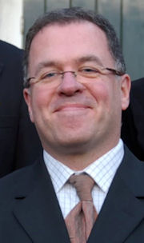

Quadrivium |
|||||||||||
|
|||||||||||
Organisation |
|||||||||||
|
|||||||||||
Activities |
|||||||||||
|
|||||||||||
for Members |
|||||||||||
|
|||||||||||
Contact |
|||||||||||
|
|||||||||||
Vokollage
Quadrivium
Vokollage is ESMG Quadrivium's mixed choir. The choir consists of about 25 people, and new members are always welcome! Our motto is that everyone can sing, some people only still have to discover it. Don't hesitate: come join us for a nice evening of singing!
You can find more information on Vokollage below. If you have any questions or if you want to join the choir for a rehearsal, you can send an e-mail to vokollage(@)esmgquadrivium.nl
Vokollage during the Spring concert at the 18th of March 2010 in the Auditorium of the TU/e (photo: Ronald Paulissen)

Vokollage during the Quadrivium winter concert in November 2012 (photo: Steinar Wouters)
Strength
We sing in the usual SATB formation (sopranos, altos, tenors and bases).
We are a fun group of young people who love to make music together. Most of us study at the TU/e or Fontys, but PhD students and students from other cities are welcome too. Vokollage includes of a lot of international students so our rehearsals are in English. We have a nice 50% balance of men/women.
Agenda 2013-2014
Repertoire
Vokollage sings classical music from all over the world. For example, in the last two years we performed:
- Various Slavic choral music (Russia and Balkan)
- Hebrew and British love songs (Israel and England)
- The modern classical piece Nova Zembla (Netherlands)
- Some choral arrangements of jazz music (USA)
- The early-twentieth century opera Treemonisha by Scott Joplin (USA)
- The comic Knock Knock cantata of the 21st century composer P.D.Q. Bach (aka Peter Schickele).
- Stabat Mater by Joseph Rheinberger
- A Little Jazz Mass by Bob Chilcott
Some recordings of our past concerts are available on the ESMG Quadrivium Youtube page.
Currently we're rehearsing pieces from the Italian Renaissance & Baroque periods in preparation for the January 2014 concert in cooperation with the Haarlem Student Choir. Among the pieces is a work by D. Scarlatti for two choirs.
Concerts
Vokollage has given a few extraordinary concerts in the last few years, each having their own special style.
A few of our highlights:
June 2013: During the festival Music on the Dommel, Vokollage performed some pieces by Gioachino Puccini: the Petite Messe Solennelle, with Marjolein Niels as mezzo-soprano, and a few pieces in Mediterranean theme: Quartetto Pastorale, Il Gondolieri and Il Carnavale di Venezia.
June 2012: At the Muziek op de Dommel festival, Vokollage did three jazz pieces: All the things you are, Fly me to the moon and Misty. Finally, the Treemonisha by Scott Joplin was performed, once again with piano accompaniment by Lex van der Meer.
March 2012: Vokollage sang some South American pieces at a lunch concert in the Blauwe Zaal at the TU/e, including Los Conflades de la Estleya by Juan de Araujo and Chacona by Jaun Arañés. After that, the pieces the Seal Lullaby, This Marriage and both volumes of the Animal Crackers, all by Eric Whitacre, were sung. Lex van der Meer accompanied the concert on the piano.
December 2011: In collaboration with Ensuite, Vokollage was the second choir to ever perform the modern Dutch piece Nova Zembla. This was done in the presence of composer Sylvia Maessen. The soloists were Erik Janze, Caroline Spanjaard and Wim Ritzerfeld and they performed in the Verigo building on the TU/e campus.
Summer 2010: As part of the lustrum activities, the choir toured the environs of the IJsselmeer by sailing ship, together with the rest of Quadrivium. With an enthousiastic group of new members we performed the Missa Criolla in four concerts to large, enthousiastic audiences. The week-long tour was a great bonding experience as well.
March 2009: In the beautiful Catharina church in the heart of Eindhoven, Vokollage performed the wonderful Requiem of Gabriel Faure. We were joined by the choir of TU/e employees 'CantaTU' and accompanied on organ by Gerard Habraken.
November 2007: Vokollage performed in the 'Frits Philips Muziekcentrum'. The repertoire was Tolga Kashif's 'The Queen Symphony'. Joined by two large choirs from the Eindhoven region, 'De Volharding' and 'La Bonne Esperance', and accompanied by the wind orchestra Auletes and the chamber orchestra Ensuite Vokollage created an extraordinary performance.
Conductor

Vokollage is conducted by Ruud Huijbregts. He studied organ, harmonium and choir conducting at the 'Brabants Conservatorium' in Tilburg. He also followed several workshops with Luigi Tagliavini and Albert de Klerk.
Next to his work as choir conductor, Ruud Huijbregts is active in several other musical areas, for example as an organist and harpsichordist. He has given many concerts in and outside the Netherlands, as well as starring in several radio- and television broadcasts and cd recordings.
Rehearsals
Vokollage rehearses on Tuesday evening from 7:30 p.m. until 10:00 p.m. in the student centre The Bunker, across the road from the Eindhoven University of Technology. After that we usually have a nice drink together in the Bunker bar.
If you are interested in joining us, feel free to come by, and listen or sing along at one of our rehearsals! You can reach the commissioner at e-mail address vokollage(at)esmgquadrivium(dot)nl. If you decide to visit the Bunker spontaneously, but do not have an access pass, you can reach the Quadrivium board room by phone at 040 247 85 06. Usually someone will be there.
Organization
Vokollage is run by volunteers from the choir; each year, one person takes on the job of commissioner, and as such is a member of the board of ESMG Quadrivium. The commissioner is supported by the VokCie (Vokollage Commissie), also volunteers. The 2013-2014 commissioner of Vokollage is Chantal Boom; she can be reached at vokollage(at)esmgquadrivium(dot)nl.